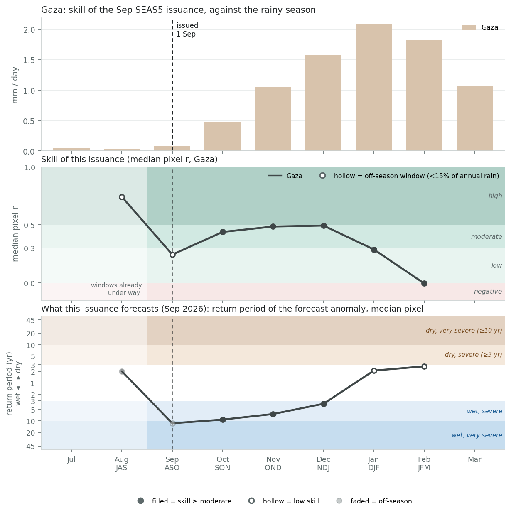
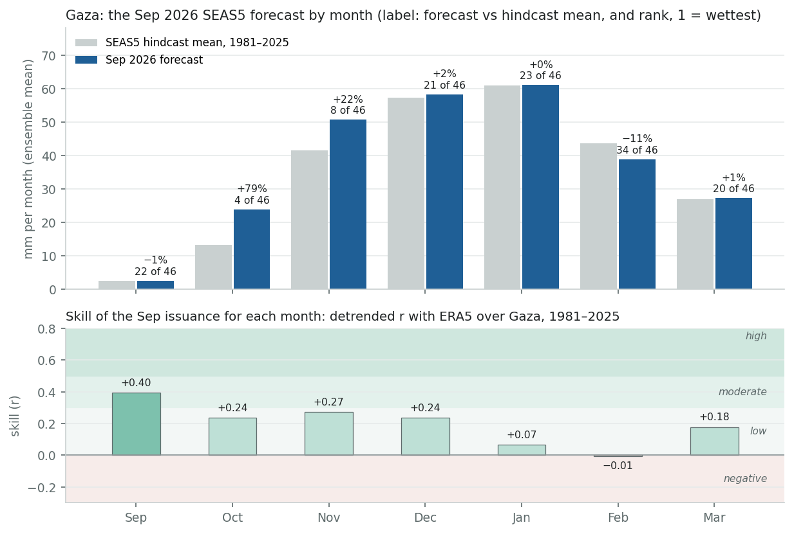
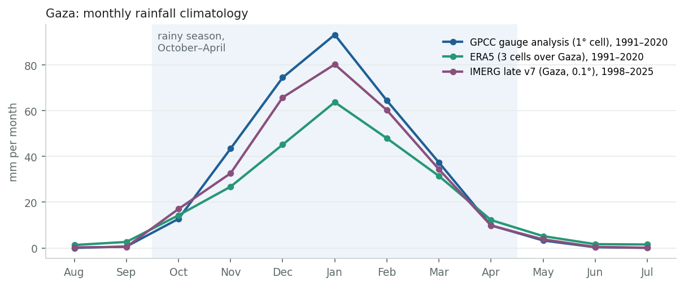
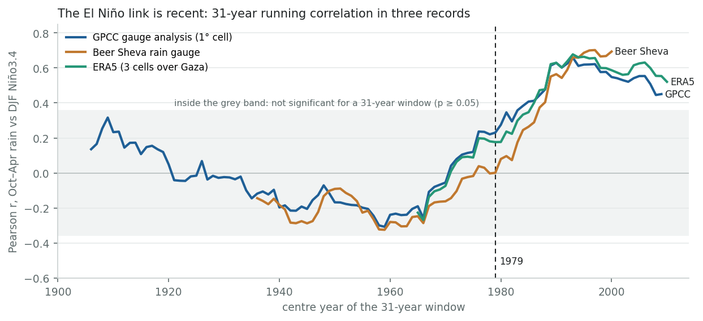
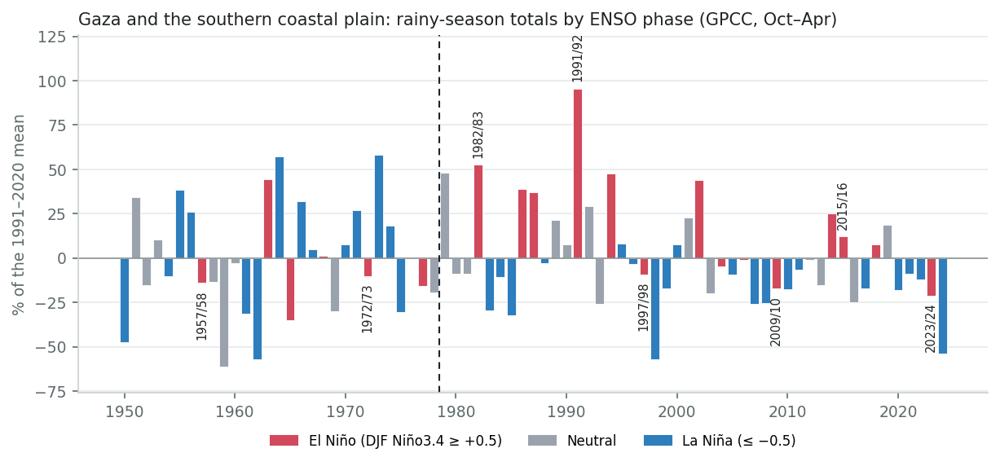
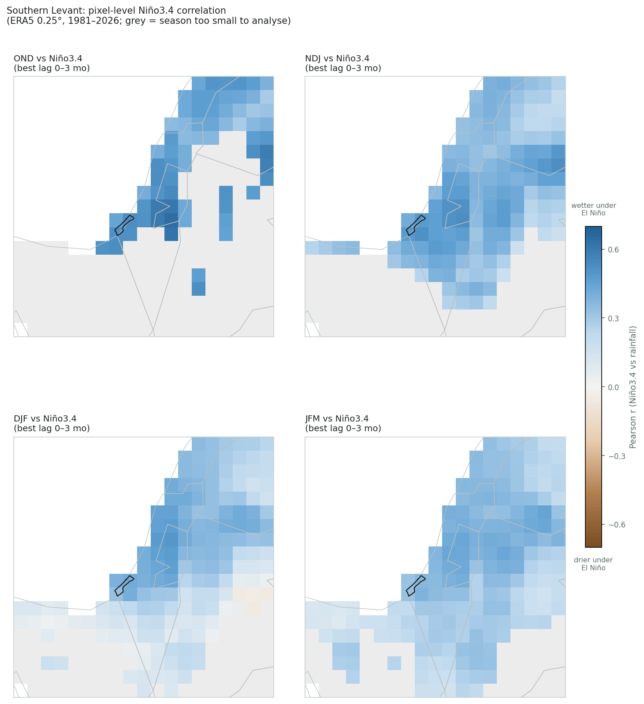
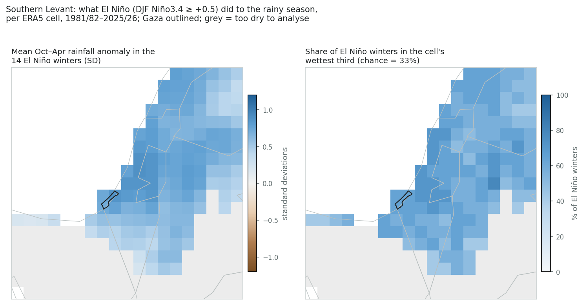
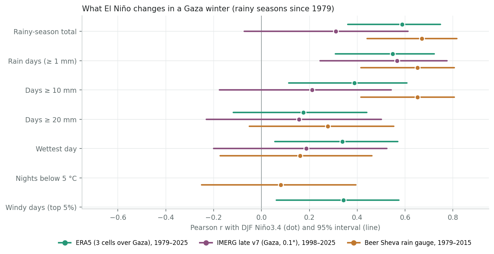
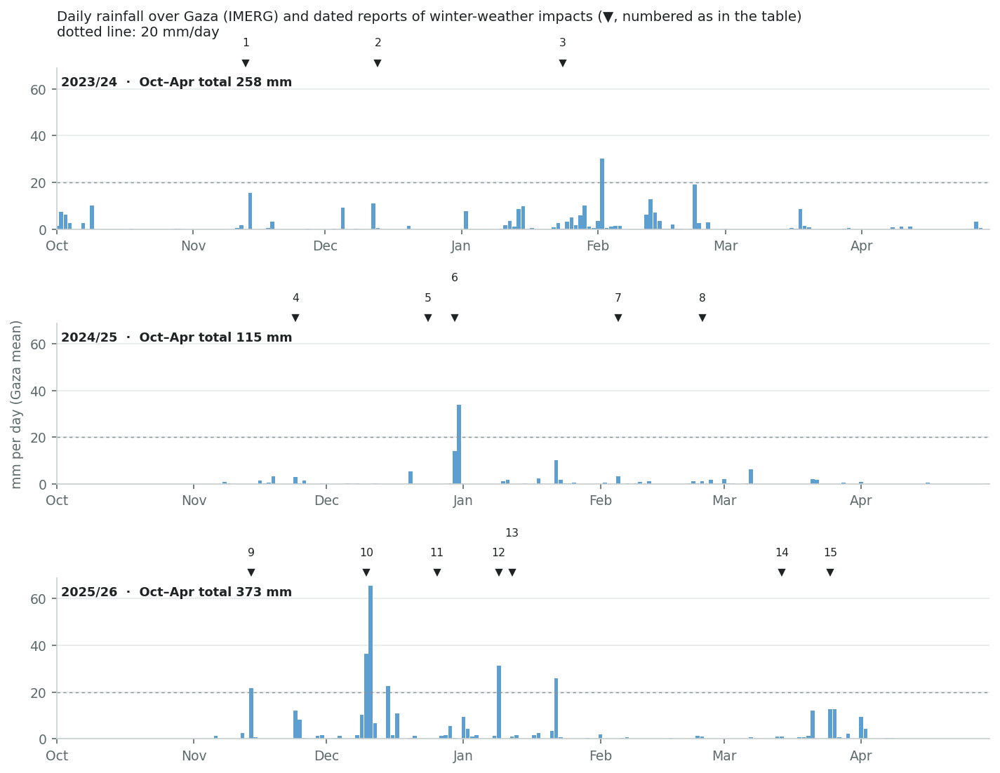

ENSO country deep dive
Survey catalogue says
El Niño → wetter, DJF
single-study source: Mariotti, Zeng & Lau 2002 (GRL); “Price, Stone & Rind 1998 (J. Climate)” as cited (see below)
This review assesses
El Niño → wetter, Oct–Apr, strongest Oct–Jan
moderate Gauge records and ERA5 agree since 1979 (r = +0.55 to +0.67); the same records show no positive link before 1979, and strong events have been mixed.
1. What the forecasts say. A very strong El Niño is under way. NOAA gives El Niño 100% odds through January–March and a 75% chance that October–December will be the strongest since 1950, weakening through the winter. Every multi-model forecast checked (C3S, ECMWF SEAS5, NMME, IRI, the WMO Lead Centre) favours above-normal rain over the southern Levant in October–December (40–70% for the wet tercile), with weaker odds in November–January and no wet signal for December–February, where one system (NMME) leans dry. All favour a warmer-than-normal winter. SEAS5 puts September–November and October–December over Gaza at 9- and 7-year wet return periods, with moderate skill; after December both its skill and its signal fade.
2. How much El Niño matters. Since 1979, clearly. Two gauge-based records and a reanalysis correlate at +0.55 to +0.67 with winter Niño3.4, and 9 of the 14 El Niño winters fell in Gaza's wettest third, against 2 (GPCC) or none (ERA5) in the driest. That moves the chance of a wettest-third winter from about one in three to about two in three, with a wide range (roughly 40–85%) on 14 cases. But the same records show no positive link before 1979. And the strong El Niños, the relevant analogues for this year, have been the least reliable: three of six were wet, one normal, and two normal to dry, including 2023/24, the first winter of the war. The two wettest, 1982/83 and 1991/92, both followed major volcanic eruptions, which makes them doubtful analogues for a winter forecast to be warm. El Niño shifts the odds towards a wet winter, mostly in its first half; it does not forecast one.
3. What changes in an El Niño winter. Mostly the number of rainy days (about ten more per winter than in a La Niña winter) and, in two of the three daily records, of days with 10 mm or more. The biggest single storms are only loosely tied to El Niño, and cold nights not at all.
4. What winter weather does in Gaza now. Every winter since October 2023 has flooded tents, including the very dry 2024/25. Damage followed ordinary rain (on several occasions no more than about 16 mm in a day; Byron's wettest day was about 66 mm), high tides with almost no rain, wind, and cold nights. Last winter the Shelter Cluster counted more than 42,000 tents damaged in Storm Byron alone, 71% of households were flooded at least once, and at least 11 children died of hypothermia (Ministry of Health). In September 2026, 451 sites holding about 464,000 people are rated high flood risk.
About the catalogue row. The survey's Palestine row was computed on the Natural Earth polygon for the West Bank only, so it has never described Gaza. Its second citation is garbled: the paper is Price, Stone, Huppert, Rajagopalan & Alpert (1998) in Geophysical Research Letters, not a Journal of Climate paper. And Mariotti et al. (2002) found the El Niño autumn wet signal in the western Mediterranean, with negative anomalies in the east in their reanalysis. The grade here rests on this page's four records and on the Israel-specific literature.
Latest Niño3.4 in NOAA PSL's current series: +1.89 °C for August 2026 (three-month mean +1.73). The historical analysis on this page uses the series' pinned Niño3.4 (ERSST v5 basis, about 0.2 °C cooler than the current ERSST v6 series), and HadISST only where a record starts before 1950.
NOAA's September outlook gives El Niño 100% odds for every season through January–March 2027. It has the event peaking in October–December, with a median relative Niño3.4 index of +2.67 °C and a 75% chance of exceeding +2.5 °C, which no event since 1950 has done. It then weakens to about +1.8 °C by January–March. On that same relative index, the October–December and November–January medians are above every El Niño since 1950. All 22 models in the IRI plume stay “very strong” through December–February, and IRI's traditional Niño3.4 (on a different sea-surface temperature dataset) was +2.52 °C in August and about +3.0 °C in mid-September; the highest month in the series this page uses is +2.72 °C (November 2015). A positive Indian Ocean Dipole is developing and is expected to fade by early 2027. The coming winter is likely to be a stronger El Niño than any the relationships below were fitted on.
The rainfall forecasts agree on a shape, not only a sign: wet odds for October–December, weaker for November–January, and no wet signal for December–February, where NMME leans dry (40–60%). That is the part of the season the El Niño signal has historically favoured (section 2), and the part where SEAS5 has skill. The forecasts also agree the winter will be warm. A warm winter still has cold nights: the newborn hypothermia deaths of December 2024 happened on nights of about 9 °C. SEAS5 and the C3S multi-model mean lean towards a negative North Atlantic Oscillation in late winter. Most Levant studies find that pattern is not a wet one for Israel and Palestine (Nissen et al. 2010; Sandler et al. 2024), and the forecast pressure anomaly over the Levant is near zero.
| Forecast | Issued | Oct–Dec | Nov–Jan | Dec–Feb | Temperature |
|---|---|---|---|---|---|
| C3S multi-system (9 models) | Sep 2026 | wet 50–60% | wet 40–50% | no signal | warm 60–100% |
| ECMWF SEAS5 | Sep 2026 | wet 50–60% | no signal | no signal | warm 70–100% (Nov–Feb) |
| NMME (NOAA) | Sep 2026 | wet 50–60% | wet 40–50% | dry 40–60% | warm 50–90% |
| IRI (calibrated NMME) | Sep 2026 | wet ≥ 70% | wet 40–45% | no signal (Jan–Mar: no signal) | warm 45% to ≥ 70% |
| WMO Lead Centre LRF-MME (11 centres, 2.5° cells) | Sep 2026 | wet 40–50% | no signal | no signal (dry 40–50% offshore) | warm 70% to ≥ 80% (Nov–Feb) |
Tercile probabilities for the wet (AN) or dry (BN) category at or near Gaza, read from the legend classes of each centre's published maps. Gaza is smaller than every model's grid cell, so these are southern-Levant values. “No signal” means no category above 40%. Compiled 30 September 2026. The October issuances (NOAA on 8 October, C3S around 10–13 October) will extend the horizon to January–March, and the Mediterranean Climate Outlook Forum (MedCOF) normally issues its winter consensus in late November.
The September 2026 SEAS5 issuance forecasts a wet start to the season over Gaza and little after it. September–November is at a 9-year wet return period, October–December 7 years and November–January 3.5 years; December–February and January–March are slightly dry of their hindcast medians (2- to 3-year dry return periods). Skill from September is moderate for the first three windows (r = 0.44–0.49) and low or absent for the last two (0.29 and 0.0). The raw ensemble-mean files for a box over Gaza give the same picture independently of the app's cube (table below): the September–November forecast is the 5th-wettest of 46 September issuances since 1981 and October–December the 8th. SEAS5's three wettest September–November hindcasts are 1997, 1982 and 2015, the three strongest El Niños in its record. So this is the El Niño signal the model carries, not an independent source of information.
What the Sep 2026 issuance forecasts. Windows at or beyond the app's 3-year return-period threshold (in-season windows excluded): SON wet 9 yr (moderate skill), OND wet 7 yr (moderate skill), NDJ wet 4 yr (moderate skill). Under the app's rule — an alert needs the return period and at least moderate skill — this issuance would raise an alert for SON, OND, NDJ.

| Zone | Cells | JAS in-season | ASO in-season | SON 0-mo lead | OND 1-mo lead | NDJ 2-mo lead | DJF 3-mo lead | JFM 4-mo lead |
|---|---|---|---|---|---|---|---|---|
| Gaza | 3 | +0.74 high 100% ≥ mod. · dry 2.0 yr | +0.24 low 33% ≥ mod. · wet 11.5 yr | +0.44 moderate 100% ≥ mod. · wet 9.2 yr | +0.49 moderate 100% ≥ mod. · wet 6.6 yr | +0.49 moderate 100% ≥ mod. · wet 3.5 yr | +0.29 low 0% ≥ mod. · dry 2.1 yr | −0.01 negative 0% ≥ mod. · dry 2.7 yr |
Each cell: median pixel r, its bin, the share of the zone's cells at moderate-or-better skill, and the median return period of the Sep 2026 forecast anomaly (dry = forecast below its hindcast median). Skill source: skill_stats_grid_detrended.nc (seas5-skill, DEV blob), the same cube behind the app's pixel skill map. Median of pixel correlations, not the correlation of the area mean, so it is a conservative summary for a coherent area.
Cross-check from the raw ensemble-mean files (box 31.0–31.8°N, 34.0–34.8°E), Sep issuances 1981–2026: where the 2026 forecast ranks among all 46 (1 = wettest), its ratio to the hindcast mean, and the three wettest hindcast years.
| Window | Rank | Ratio to mean | Wettest hindcasts (issuance year) |
|---|---|---|---|
| SON | 5 of 46 | 1.34 | 1997, 1982, 2015 |
| OND | 8 of 46 | 1.18 | 2015, 1997, 2002 |
| NDJ | 15 of 46 | 1.07 | 1982, 2023, 2002 |
| DJF | 27 of 46 | 0.98 | 2014, 1994, 1986 |
| JFM | 30 of 46 | 0.97 | 1986, 1994, 2014 |
By month, the wet signal sits in October (+79% on the hindcast mean, the 4th-wettest of 46 September forecasts) and November (+22%, the 8th). December, January and March are at their hindcast means, and February is slightly dry (−11%). Skill for single months is low throughout the rainy season (r = −0.01 to +0.27), so read the monthly split as a guide to where the three-month signal sits, not as a forecast for individual months.

| Month | Hindcast mean | Forecast | vs mean | Rank (1 = wettest) | Skill r | ERA5 mean, Gaza |
|---|---|---|---|---|---|---|
| Sep | 3 mm | 3 mm | −1% | 22 of 46 | +0.40 moderate | 3 mm |
| Oct | 13 mm | 24 mm | +79% | 4 of 46 | +0.24 low | 14 mm |
| Nov | 41 mm | 51 mm | +22% | 8 of 46 | +0.27 low | 28 mm |
| Dec | 57 mm | 58 mm | +2% | 21 of 46 | +0.24 low | 43 mm |
| Jan | 61 mm | 61 mm | +0% | 23 of 46 | +0.07 low | 60 mm |
| Feb | 44 mm | 39 mm | −11% | 34 of 46 | −0.01 negative | 49 mm |
| Mar | 27 mm | 27 mm | +1% | 20 of 46 | +0.18 low | 32 mm |
SEAS5 ensemble-mean totals are smoother than any single year, so compare the forecast with the hindcast mean and rank, not with observed rainfall. ERA5 mean: the three cells over Gaza, same years, for scale.
Gaza's rain falls between October and April, most of it from December to February, almost all of it from Mediterranean cyclones. Gaza is 365 km²: three ERA5 cells and a corner of one GPCC cell. So this section uses four rainfall records: two gauge-based (the GPCC analysis, and the Beer Sheva gauge, which is one of GPCC's inputs), a reanalysis that assimilates no rain gauges (ERA5), and a satellite product (IMERG). It asks two questions: does El Niño make Gaza's winter wetter, and has it always done so?

Since the late 1970s, yes; before that, no. Since 1979 the correlation between the October–April total and December–February Niño3.4 is +0.55 in GPCC (to 2024/25), +0.59 in ERA5 (to 2025/26) and +0.67 at the Beer Sheva gauge (to 2015/16). Each is significant at p < 0.001 and unchanged by detrending, and each holds at +0.45 to +0.62 without 1982/83 and 1991/92. Before 1979 the same records give −0.06 (GPCC, from 1891), −0.26 (Beer Sheva, from 1921; nominally significant, p = 0.045) and −0.26 (ERA5, from 1950). Over each full record the correlation is weak (+0.13 to +0.29). All three running correlations climb out of the noise band in the early 1980s and stay out. The switch is in the gauge records as well as the reanalysis, so it is not an artefact of ERA5.
The literature found the same break. Price et al. (1998) saw significant correlations only in the last 25 years of their Israeli record, and Alpert et al. (2005) found no connection before the 1970s. A 2026 Israel Meteorological Service technical report (not peer-reviewed) finds r ≈ 0.50–0.55 over the last 50 years, strongest in the northern Negev and the Shephelah next to Gaza, and about 11–14% more rain per degree of Niño3.4. Similar switches have been found for Arabian winter rainfall (Kang et al. 2015) and Euro-Mediterranean winter storm frequency (Kamil et al. 2017: −0.24 in 1950–79, +0.44 in 1987–2016). Reviews call the eastern Mediterranean ENSO influence “seasonally dependent, small, and intermittent” (Dayan et al. 2015).
What this means for use: the relationship has held for 45 winters, the whole period in which seasonal forecasts have existed. But it is not a law of nature, and it could weaken again. IMERG (1998–) agrees on the sign but is weaker (r = +0.31, not significant over 28 winters). Its seasonal totals track the gauges less well (r = 0.72 with GPCC) than ERA5 does (0.91).

| Record | Winters | Niño3.4 | r | p | r, detrended |
|---|---|---|---|---|---|
| GPCC gauge analysis (1° cell) | 1891/92 – 1978/79 | HadISST | −0.06 | 0.604 | −0.09 |
| GPCC gauge analysis (1° cell) | 1979/80 – 2024/25 | ERSST v5 (pinned) | +0.55 | <0.001 | +0.56 |
| GPCC gauge analysis (1° cell) | 1998/99 – 2024/25 | ERSST v5 (pinned) | +0.46 | 0.015 | +0.50 |
| GPCC gauge analysis (1° cell) | 1891/92 – 2024/25 | HadISST | +0.14 | 0.101 | +0.15 |
| Beer Sheva rain gauge | 1921/22 – 1978/79 | HadISST | −0.26 | 0.045 | −0.26 |
| Beer Sheva rain gauge | 1979/80 – 2015/16 | ERSST v5 (pinned) | +0.67 | <0.001 | +0.68 |
| Beer Sheva rain gauge | 1921/22 – 2015/16 | HadISST | +0.13 | 0.195 | +0.13 |
| ERA5 (3 cells over Gaza) | 1950/51 – 1978/79 | HadISST | −0.26 | 0.166 | −0.26 |
| ERA5 (3 cells over Gaza) | 1979/80 – 2025/26 | ERSST v5 (pinned) | +0.59 | <0.001 | +0.59 |
| ERA5 (3 cells over Gaza) | 1998/99 – 2025/26 | ERSST v5 (pinned) | +0.54 | 0.003 | +0.54 |
| ERA5 (3 cells over Gaza) | 1950/51 – 2025/26 | HadISST | +0.29 | 0.011 | +0.30 |
| IMERG late v7 (Gaza, 0.1°) | 1998/99 – 2025/26 | ERSST v5 (pinned) | +0.31 | 0.109 | +0.31 |
Is the change real? A Fisher z-test for the difference between the correlations before and after 1979: ERA5 z = 3.8, p < 0.001; GPCC z = 3.6, p < 0.001; Beer Sheva gauge z = 5.0, p < 0.001. The 1979 break was not chosen blind: it is where the literature places the change (Price et al. 1998; Alpert et al. 2005) and the start of the satellite era. p-values for the period after the break are conditional on choosing it; the full-record rows show what an unsplit analysis gives.
Since 1979, 9 of the 14 El Niño winters in the GPCC record fell in the wettest third and 2 in the driest; in ERA5, 9 and none. La Niña winters ran the other way: 2 of 19 in the wettest third and 10 in the driest. Before 1979, El Niño winters were as likely to be dry as wet (8 in the wettest third and 11 in the driest, of 25), and La Niña winters were if anything wet (11 of 26 in the wettest third, 5 in the driest).

| Record, period | ENSO phase | Winters | Wettest third | Middle third | Driest third |
|---|---|---|---|---|---|
| GPCC, 1891/92 – 1978/79 | El Niño | 25 | 8 | 6 | 11 |
| GPCC, 1891/92 – 1978/79 | Neutral | 37 | 11 | 13 | 13 |
| GPCC, 1891/92 – 1978/79 | La Niña | 26 | 11 | 10 | 5 |
| GPCC, 1979/80 – 2024/25 | El Niño | 14 | 9 | 3 | 2 |
| GPCC, 1979/80 – 2024/25 | Neutral | 13 | 5 | 5 | 3 |
| GPCC, 1979/80 – 2024/25 | La Niña | 19 | 2 | 7 | 10 |
| ERA5, 1979/80 – 2025/26 | El Niño | 14 | 9 | 5 | 0 |
| ERA5, 1979/80 – 2025/26 | Neutral | 13 | 5 | 4 | 4 |
| ERA5, 1979/80 – 2025/26 | La Niña | 20 | 2 | 7 | 11 |
Terciles are computed within each period, so each period is judged against its own climate. Phase from December–February Niño3.4 (±0.5 °C): HadISST before 1979, the pinned ERSST v5 series from 1979. On HadISST, 16 winters since 1979 count as El Niño rather than 14, and 11 of them were in the GPCC wettest third.
Strength does not buy certainty, and the literature agrees that larger El Niños do not reliably bring larger rainfall anomalies here (Mariotti et al. 2002; Alpert et al. 2005). Of the six strong El Niños since 1979:
1982/83 and 1991/92 both followed major volcanic eruptions (El Chichón, Pinatubo), and 1991/92 was unusually cold across the Middle East. That makes them doubtful analogues for a winter every forecast expects to be warm. It is a caution about analogues, not a reason to discount them: we found no study attributing their rainfall to the eruptions. The two strong events before 1979 (1957/58, 1972/73) were normal to dry. The El Niño winters that delivered most reliably were moderate ones (1986/87, 1987/88, 1994/95, 2002/03).
| Winter | Niño3.4 DJF | GPCC | ERA5 | Beer Sheva | IMERG | Note |
|---|---|---|---|---|---|---|
| 1957/58 | +1.5 | 283 mm 38th pct · middle | 184 mm 21st pct · driest | 102 mm 10th pct · driest | — | |
| 1972/73 | +1.7 | 295 mm 48th pct · middle | 257 mm 55th pct · middle | 166 mm 45th pct · middle | — | |
| 1982/83 | +2.2 | 502 mm 98th pct · wettest | 360 mm 98th pct · wettest | 263 mm 92nd pct · wettest | — | El Chichón erupted in April 1982; 1982/83 is in Dogar et al.'s (2017) composite of volcanically cooled Middle East winters. |
| 1991/92 | +1.8 | 643 mm 100th pct · wettest | 424 mm 100th pct · wettest | 280 mm 95th pct · wettest | — | Pinatubo erupted in June 1991; snow in Jerusalem and the Negev; about twice the average rainfall in Israel (IMS). |
| 1997/98 | +2.2 | 298 mm 43rd pct · middle | 261 mm 62nd pct · middle | 184 mm 43rd pct · middle | — | |
| 2009/10 | +1.5 | 272 mm 33rd pct · driest | 232 mm 53rd pct · middle | 208 mm 62nd pct · middle | 276 mm 36th pct · middle | IMS: southern coastal plain 50–75% of normal. |
| 2015/16 | +2.5 | 369 mm 74th pct · wettest | 283 mm 79th pct · wettest | 255 mm 84th pct · wettest | 324 mm 57th pct · middle | IMS: Be'eri, next to Gaza, 153% of normal; nationally a dry year. |
| 2023/24 | +1.8 | 259 mm 20th pct · driest | 208 mm 34th pct · middle | — | 258 mm 32nd pct · driest | IMS: 70–90% of normal along the Gaza border while northern Israel had 130–165%; about 2 °C warmer than average. |
Niño3.4 ≥ +1.5 °C in December–February on the pinned series. Percentiles are within 1979–2025 for winters from 1979, within 1950–1978 before.
The concurrent signal runs through the whole season, strongest early: r = 0.35–0.52 for every three-month window from October–December to January–March, in both GPCC and ERA5. What matters for a forecast now is the August–October Niño3.4, known before the season starts. It predicts the season total nearly as well (r = 0.45 in GPCC, 0.50 in ERA5), the windows from October–December to December–February at 0.32–0.46, and January–March more weakly (0.28–0.29, borderline significant). That matches SEAS5, whose skill and wet signal both fade after December, and the literature, which puts the eastern Mediterranean ENSO signal in autumn and early winter (Hochman & Gildor 2025; Mariotti et al. 2005).
| Record | Window | r, concurrent Niño3.4 | p | r, Aug–Oct Niño3.4 | p |
|---|---|---|---|---|---|
| GPCC | OND | +0.42 | 0.003 | +0.36 | 0.013 |
| GPCC | NDJ | +0.41 | 0.005 | +0.32 | 0.031 |
| GPCC | DJF | +0.41 | 0.004 | +0.35 | 0.019 |
| GPCC | JFM | +0.35 | 0.017 | +0.29 | 0.054 |
| GPCC | Oct–Apr | +0.55 | <0.001 | +0.45 | 0.002 |
| ERA5 | OND | +0.52 | <0.001 | +0.46 | 0.001 |
| ERA5 | NDJ | +0.48 | <0.001 | +0.44 | 0.002 |
| ERA5 | DJF | +0.40 | 0.005 | +0.37 | 0.011 |
| ERA5 | JFM | +0.36 | 0.013 | +0.28 | 0.052 |
| ERA5 | Oct–Apr | +0.59 | <0.001 | +0.50 | <0.001 |
1979–2025. Concurrent = Niño3.4 averaged over the same three months (December–February for October–April). August–October Niño3.4 is the value known when the season starts.
The signal is not a Gaza artefact. Across the southern Levant (the Israeli coastal plain, the hills of the West Bank, western Jordan and southern Lebanon), cells show the same positive correlation. It is most coherent in October–December (97% of analysable cells at r ≥ 0.3, though only 71 cells are analysable; the rest are too dry in that window) and November–January (76% of 144), and patchier in December–February and January–March. As in the survey, each cell keeps the best of four lags (0–3 months), which flatters r somewhat; the composite maps use concurrent December–February Niño3.4 and no lag search. Over the 14 El Niño winters of 1981/82–2025/26, every analysed cell in the region had a positive mean anomaly. The cells over Gaza averaged +0.77 standard deviations, with 64% of El Niño winters in their wettest third against 33% by chance.


A wetter El Niño winter is mostly a winter with more rainy days, not bigger storms. In all three records the number of rain days rises with Niño3.4 (r = 0.55–0.65). ERA5 has 54 rain days in an average El Niño winter against 42 in a La Niña winter, IMERG 41 against 33, and the Beer Sheva gauge 33 against 22. Days of 10 mm or more rise clearly at Beer Sheva (7.8 against 4.4) and in ERA5, but not in IMERG. The heaviest days are only loosely tied: for days of 20 mm or more and for the season's wettest day, correlations are 0.16–0.34, and only ERA5's wettest day clears p < 0.05. The Israel Meteorological Service likewise finds no significant El Niño link to daily or storm maximum rainfall, but about 15% more days with a nearby low in El Niño than in La Niña winters. Cold nights show no link (Beer Sheva, r = +0.08). Windy days may be somewhat more frequent (12.8 against 9.3 of ERA5's top-5% days, r = +0.34, p = 0.02); with 17 tests in the table, treat that as suggestive.
The distinction matters for people in tents. The storms that tear down shelters and flood whole sites, like Byron in December 2025, can come in any winter. What El Niño adds is more wet days around them. Our reading, not tested here, is that this is what keeps ground saturated, stormwater basins full and bedding wet between storms.

| Metric | Record | El Niño | Neutral | La Niña | r | p |
|---|---|---|---|---|---|---|
| Rainy-season total | ERA5 1979–2025 | 289.8 mm | 240.4 mm | 206.6 mm | +0.59 | <0.001 |
| Rainy-season total | IMERG 1998–2025 | 336.7 mm | 323.6 mm | 274.5 mm | +0.31 | 0.109 |
| Rainy-season total | Beer Sheva gauge 1979–2015 | 239.7 mm | 205.3 mm | 151.1 mm | +0.67 | <0.001 |
| Rain days (≥ 1 mm) | ERA5 1979–2025 | 54.3 | 44.4 | 42.4 | +0.55 | <0.001 |
| Rain days (≥ 1 mm) | IMERG 1998–2025 | 41.4 | 34.0 | 32.5 | +0.57 | 0.002 |
| Rain days (≥ 1 mm) | Beer Sheva gauge 1979–2015 | 32.8 | 24.4 | 22.1 | +0.65 | <0.001 |
| Days ≥ 10 mm | ERA5 1979–2025 | 6.5 | 6.1 | 4.2 | +0.39 | 0.007 |
| Days ≥ 10 mm | IMERG 1998–2025 | 9.8 | 10.5 | 8.3 | +0.21 | 0.279 |
| Days ≥ 10 mm | Beer Sheva gauge 1979–2015 | 7.8 | 6.3 | 4.4 | +0.65 | <0.001 |
| Days ≥ 20 mm | ERA5 1979–2025 | 0.6 | 0.5 | 0.3 | +0.18 | 0.239 |
| Days ≥ 20 mm | IMERG 1998–2025 | 3.4 | 4.3 | 2.9 | +0.16 | 0.426 |
| Days ≥ 20 mm | Beer Sheva gauge 1979–2015 | 2.3 | 2.5 | 1.4 | +0.28 | 0.097 |
| Wettest day | ERA5 1979–2025 | 20.8 mm | 19.3 mm | 16.9 mm | +0.34 | 0.020 |
| Wettest day | IMERG 1998–2025 | 51.8 mm | 49.6 mm | 45.7 mm | +0.19 | 0.341 |
| Wettest day | Beer Sheva gauge 1979–2015 | 35.1 mm | 36.4 mm | 28.3 mm | +0.16 | 0.341 |
| Nights below 5 °C | Beer Sheva gauge 1979–2015 | 19.7 | 19.8 | 16.5 | +0.08 | 0.634 |
| Windy days (top 5%) | ERA5 1979–2025 | 12.8 | 10.3 | 9.3 | +0.34 | 0.018 |
Means per winter, by ENSO phase. The records differ in level: ERA5 spreads rain over a 25 km cell and understates heavy days; IMERG is satellite-only; Beer Sheva is drier and 46 km inland. Compare phases within a record, not across records.
As of September 2026 about 1.7 million people live in roughly 1,600 displacement sites, and 65% of households live in tents or makeshift shelters. Last winter 71% of households were flooded at least once, and 83% of those in tents (Shelter Cluster). The inter-agency flood-exposure outlook for 2026/27 puts 989 of 1,764 assessed sites in medium- or high-risk areas, and 451 sites holding about 464,000 people in high-risk areas (IOM, Site Management Cluster and Shelter Cluster, September 2026; OCHA). That exposure map uses terrain and past flooding, not rainfall. No published analysis links rainfall amounts to tent flooding in Gaza, and no rain gauge inside Gaza reports internationally. The table below is a first pass at that link: every dated winter impact in UN reporting since October 2023, with the weather over Gaza on those days.
Three things stand out.
How often the rain that has caused these impacts comes: over 1998–2025, IMERG puts an average of 9.2 days of ≥ 10 mm, 3.3 of ≥ 20 mm, 1.5 of ≥ 30 mm and 0.6 of ≥ 50 mm over Gaza in each October–April.

| # | Dates | Hazard | What was reported | IMERG wettest day Gaza · north · south | Window total IMERG · ERA5 | ERA5 coldest night · strongest wind | Source |
|---|---|---|---|---|---|---|---|
| 1 | 2023-11-13 to 2023-11-14 | R W | First rains of the war: rain and flooding “damaged or destroyed tents and makeshifts” of people outside the shelters in the south; no count. | 16 mm 17 · 14 | 17 mm · 11 mm | 19 °C · 5 m/s | OCHA Flash Update #39, 14 Nov 2023 |
| 2 | 2023-12-13 | R | Heavy rain “flooding many of the areas”; the following week, tents and makeshift shelters in Rafah flooded; no count. | 11 mm 13 · 9 | 12 mm · 13 mm | 12 °C · 7 m/s | OCHA Flash Update #68, 13 Dec 2023; #73 |
| 3 | 2024-01-24 to 2024-01-25 | R W C | Overnight rain flooded tents in Deir al Balah and Rafah, washing away bedding and food; no count. | 3 mm 5 · 3 | 6 mm · 10 mm | 12 °C · 9 m/s | UNRWA via OCHA (28 Jan 2024); CNN, 25 Jan 2024 |
| 4 | 2024-11-24 to 2024-11-25 | R S | Rain and high tides: about 7,000 shoreline families affected; more than 600 tents hit by the tide at Al Qarara; 60 shelters destroyed and 120 damaged at two Deir al Balah sites. About 10,000 tents washed away or damaged (Government Media Office). UNOSAT later mapped 528 coastal shelters affected by the tide. | 3 mm 2 · 4 | 3 mm · 5 mm | 13 °C · 8 m/s | OCHA HSU #241, 26 Nov 2024; UNOSAT, 13 Dec 2024 |
| 5 | 2024-12-24 to 2024-12-29 | C | At least five newborns died of hypothermia in tents in central and southern Gaza (Ministry of Health); eight by 6 January. | 0 mm 1 · 0 | 0 mm · 2 mm | 9 °C · 8 m/s | OCHA HSU #251, 31 Dec 2024 |
| 6 | 2024-12-30 to 2024-12-31 | R | 1,542 tents flooded across Gaza, Khan Younis, Deir al Balah and Rafah (Civil Defence). | 34 mm 40 · 28 | 48 mm · 20 mm | 11 °C · 7 m/s | OCHA HSU #253, 8 Jan 2025 |
| 7 | 2025-02-05 to 2025-02-06 | R W | Rain and strong wind: at least 800 families at the 23 sites assessed reported damage to shelters, tents, water tanks and latrines (a floor, not a Gaza-wide total). | 3 mm 4 · 2 | 3 mm · 8 mm | 9 °C · 11 m/s | OCHA HSU #263, 11 Feb 2025 |
| 8 | 2025-02-24 to 2025-02-25 | C | Six newborns died of cold (health officials). | 1 mm 2 · 1 | 2 mm · 4 mm | 4 °C · 6 m/s | OCHA HSU #267, Feb 2025 |
| 9 | 2025-11-14 to 2025-11-15 | R S | First rains after the ceasefire: an estimated 13,000 tents completely damaged (Shelter Cluster); more than 13,000 households affected; the Sheikh Radwan stormwater basin rose 37 cm; sea reached coastal tents on 16–17 November. | 22 mm 41 · 2 | 22 mm · 20 mm | 17 °C · 8 m/s | OCHA HSU #342, 20 Nov 2025 |
| 10 | 2025-12-10 to 2025-12-17 | R W S | Storm Byron. More than 42,000 tents or makeshift shelters damaged in 320 sites, at least 235,000 people affected, 17 buildings collapsed (Shelter Cluster); 12 storm-related deaths, 11 in collapsing buildings and one from hypothermia (Health Cluster). | 66 mm 73 · 58 | 154 mm · 62 mm | 9 °C · 6 m/s | OCHA HSU #349, 18 Dec 2025; SitRep 49 |
| 11 | 2025-12-26 to 2025-12-30 | R S W | Seawater “once again” inundated tents in Al Mawasi; strong wind destroyed or damaged numerous tents; no count. | 5 mm 10 · 2 | 9 mm · 35 mm | 12 °C · 11 m/s | OCHA HSU #351, 30 Dec 2025 |
| 12 | 2026-01-09 to 2026-01-10 | R | More than 1,300 households in 34 northern sites lost their shelters. | 31 mm 28 · 34 | 33 mm · 9 mm | 11 °C · 10 m/s | OCHA SitRep 61, 13 Jan 2026 |
| 13 | 2026-01-12 to 2026-01-16 | W C R | Wind and cold with some rain: 4,136 households (about 19,230 people) affected in 106 sites; 3,455 tents and makeshift shelters destroyed or severely damaged; 7 deaths and 34 injuries (Site Management Cluster). On 12–13 January three children died of cold. | 2 mm 3 · 0 | 3 mm · 16 mm | 10 °C · 10 m/s | OCHA SitRep 61, 13 Jan 2026; SitRep 62, 16 Jan 2026 |
| 14 | 2026-03-14 | W R | Sandstorm and strong wind, then rain: 894 households affected; 29 shelters destroyed and 32 damaged. | 1 mm 1 · 1 | 2 mm · 4 mm | 10 °C · 12 m/s | OCHA HSR, 19 Mar 2026 |
| 15 | 2026-03-25 to 2026-03-26 | R | Heavy rain flooded or damaged the tents and belongings of more than 3,000 people (about 600 households). | 13 mm 15 · 12 | 26 mm · 21 mm | 11 °C · 8 m/s | OCHA HSR, 2 Apr 2026 |
Hazard: R rain and flooding, S sea surge or high tide, W wind, C cold. Weather columns cover the window from the day before the reported start to the reported end: IMERG wettest day over Gaza (north = cells at 31.4–31.6°N: North Gaza, Gaza governorate and most of Deir al Balah; south = 31.2–31.4°N: Khan Younis and Rafah); window totals from IMERG and from ERA5 (which smooths rain over 25 km cells and runs lower on heavy days; the two disagree on single days by a factor of two or more, so read them as a range); ERA5 lowest daily minimum temperature and highest hourly 10 m wind, averaged over the three cells over Gaza (partly sea, so milder and less gusty than an exposed tent site). Figures in italics are from Gaza authorities (Ministry of Health, Civil Defence, Government Media Office) as relayed by the UN; the rest are UN agency or cluster figures.
Before October 2023, winter floods hit homes, refugee camps and the low ground around Wadi Gaza and the Sheikh Radwan stormwater lagoon, mostly because drainage was overwhelmed or pumping stations had no power. Even then the threshold was low. “Mild rainfall” (about 3 mm in IMERG) flooded houses and a sewage pump station in Gaza City in November 2017, and four children died of cold in the January 2015 storm, all from families made homeless in the 2014 war.
| Dates | Hazard | What was reported | IMERG wettest day Gaza · north · south | Window total IMERG · ERA5 | ERA5 coldest night · strongest wind | Source |
|---|---|---|---|---|---|---|
| 2008-10-27 to 2008-10-28 | R | Beach and Jabalia camps flooded; streets filled with water and sewage; no count. | 40 mm 59 · 22 | 50 mm · 16 mm | 17 °C · 6 m/s | UNRWA, 1 Nov 2008 |
| 2010-01-18 to 2010-01-19 | R | Wadi Gaza flood: about 800 people evacuated from Al Mughraqa and Juhor ad-Dik, water up to 2 m inside houses. | 71 mm 73 · 69 | 114 mm · 32 mm | 13 °C · 9 m/s | OCHA Humanitarian Monitor, Jan 2010 |
| 2013-01-07 to 2013-01-10 | R W | 530 homes damaged; 20 families displaced; one death in a rain-induced tunnel collapse. | 22 mm 26 · 20 | 62 mm · 55 mm | 7 °C · 13 m/s | OCHA, 16 Jan 2013 |
| 2013-12-11 to 2013-12-14 | R C | Storm Alexa. About 10,000 people evacuated at the peak; homes of about 21,000 people damaged; 2 deaths; the Sheikh Radwan lagoon overflowed on 14 December. The widely quoted “40,000 displaced” has no UN source. | 56 mm 67 · 50 | 186 mm · 50 mm | 6 °C · 12 m/s | OCHA SitRep, 14 Dec 2013; 16 Dec |
| 2014-11-24 to 2014-11-27 | R | After the 2014 war: about 350 people moved to UNRWA shelters; hundreds evacuated around the Sheikh Radwan lagoon; UNRWA declared an emergency in Gaza City. | 42 mm 48 · 37 | 65 mm · 34 mm | 13 °C · 9 m/s | OCHA, Nov 2014 |
| 2015-01-06 to 2015-01-13 | C R | Storm Huda: four children died of cold on 9, 10, 11 and 13 January, all from families whose homes were destroyed in the 2014 war; 151 people in UNRWA centres. | 39 mm 30 · 51 | 112 mm · 54 mm | 5 °C · 13 m/s | UNICEF SitRep, Jan 2015 |
| 2017-11-26 | R | “Mild rainfall” flooded houses, shops and the al-Nafaq sewage pump station in Gaza City (no grid power for the pumps). | 3 mm 3 · 3 | 3 mm · 2 mm | 13 °C · 4 m/s | OCHA, Dec 2017 |
| 2019-12-08 to 2019-12-09 | R | About 2,000 homes flooded (initial reports). | 16 mm 26 · 9 | 29 mm · 21 mm | 13 °C · 6 m/s | OCHA Humanitarian Bulletin, Dec 2019 |
| 2020-01-18 to 2020-01-19 | R C | About 100 families temporarily displaced by flooded homes; two deaths in Gaza (Red Crescent). | 20 mm 25 · 15 | 25 mm · 24 mm | 12 °C · 8 m/s | OCHA, Jan 2020; IFRC DREF MDRPS011 |
Generated by gaza_deep_dive.py from deep_dives/gaza.toml. Grid method and Niño3.4 series as in the global survey.